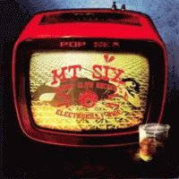

MT SIX - Pop Sex (Cosmic Slow Rocker's Electrobilly Ride) (Album, 2007)
01 - Innocence (4:14)
02 - Electrobillyrebel (2:25)
03 - Pop Sex (3:20)
04 - Cosmic Slow Rockers (3:06)
05 - Evil Waltz (3:14)
06 - 1'Onesfirst (3:53)
07 - Elvis Is Dead (3:01)
08 - Redrum (3:01)
09 - Spoonfedhybrids (3:33)
10 - Point Of No Return (8:47)
© Sist I Køa Plater :: [1202]
Notes
Review
305/366 (Project 366)
Today there are a lot of strange, freaky, plague and weird ones, so I decided to review a rather unusual sound with a strange concept. Although somewhat groovy and generally cool for this style, it should not be taken too seriously. It is just a fancy project of musicians from Norway and around. But I can call it great. At least, pretty impressively done with its Electrobilly form of punky and alternative Rock'n'Roll. Somewhat psycho, somewhat garage mood. Almost all of the distinctive points are focused on the electro side. Other than that, each song is unique, the lyrics are rather adult, a lot of catchy things, and so on. I think it is more suitable for a lover of something like greasy punk, cranky and cracky sound, mad mood and so.. than someone can like it as it is. On the other hand, the instrumental component of the songs cannot but arouse interest in some form. That is, it makes an impression in any case. And the texts will leave unambiguous feelings. A lot of energy, a lot of drive, a lot of quirkiness. Much, but simple.